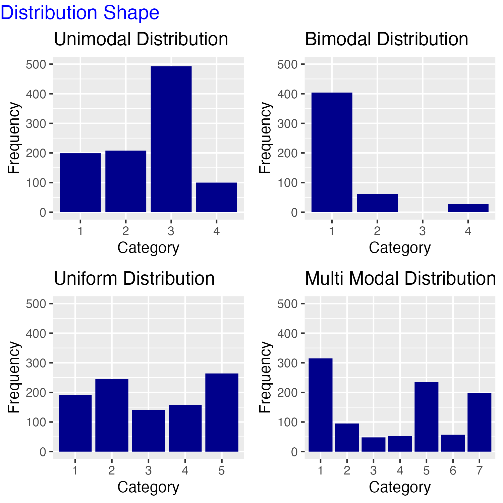
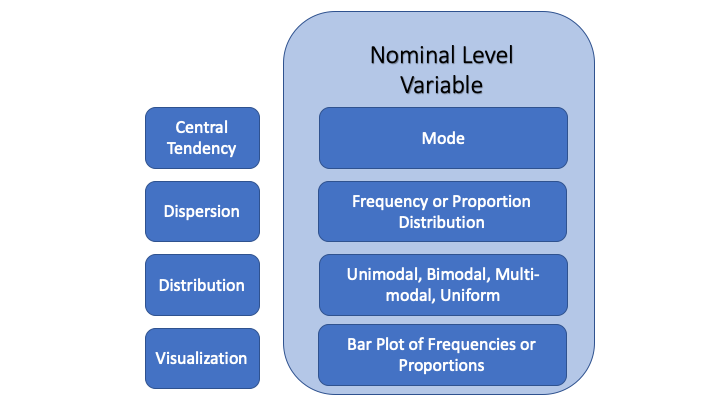

Learning Objectives
In this tutorial, you will learn how to describe a nominal level variable using summary statistics and plots. Specifically, we will cover:
- How to determine and describe the central tendency of a nominal variable
- How to summarize the dispersion of a nominal variable
- How to combine multiple dplyr
operations with the pipe,
%>%- How to compute counts of observations with
n() - How to summarise groups of observations with
group_by()andsummarise() - How to compute proportions using
mutate()
- How to compute counts of observations with
- How to generate a bar plot of counts and proportions using
ggplot()andgeom_bar()from the ggplot2 package
Descriptive Statistics
Descriptive statistics provide simple summaries about the sample and the measures. Together with simple graphical analysis, they form the basis of virtually every quantitative analysis of data.
The first step in any analysis is to describe the variables that are the focus of our research question in order to convey how they behave, what they look like, and, therefore, what features of the data our explanation needs to account for. For example:
If we want to understand the causes of mass political polarization in current American politics, our starting point is to describe the nature and extent of polarization. It is important to know just how polarized individual Americans are and whether most Americans are polarized or whether values of political polarization across individuals are highly varied.
If we want to assess the relationship between the level of democracy in a nation-state and its economic outcomes, we first need to know something about the features of our measures of democracy and of economic outcomes in our data set: how common are democratic governments, are most democratic or not, and what is the range and typical level of economic prosperity across countries?
If we want to know why Donald Trump won the 2016 presidential election and our research method relies on county-level analysis of the vote, we want to know how Trump did in the typical county and how much variation there was in his performance across counties.
Typically our data sets contain observations on a large number of cases where it is difficult, or impossible, to understand the main features of the data by examining all the values a variable takes. Descriptive statistics are used to present quantitative descriptions of our data in a manageable form by reducing the data into simpler summary information. This simplification cannot convey all the nuances in the data, but it provides a picture of the overarching characteristics of the data.
Univariate description involves the examination of a single variable at a time. There are three major characteristics of a single variable that comprise descriptive analysis:
- Central tendency. Central tendency refers to the “typical value” a variable takes.
- Dispersion. Dispersion refers to the spread or variation in the values a variable takes. When assessing dispersion, we want to know how similar or different the values taken by the variable are.
- The shape of the distribution. The distribution of a variable is a summary of the frequency of individual values or ranges of values for a variable. When plotted, we can desribe the shape of the distribution.
In most situations, we use statistical summaries as well as visualizations – plots or figures – to describe all three of these characteristics for each of the variables in our study.
How we describe a single variable depends on its level of measurement. In this and the next two tutorials, we will introduce descriptive statistics to describe the basic features of nominal, ordinal, and interval level data. In this tutorial, we will cover how to describe nominal level variables.
Before we get started, see if you can pick out the nominal level measures below.
Central Tendency
Central tendency refers to the “typical value” a variable takes. It is the center of the distribution of values a variable can take or the middle. A “distribution” shows all the possible values of a variable and how often each value occurs. The appropriate summary statistic to use to describe the central tendency of a variable depends on its level of measurement. Only one statistic is available to summarize the central tendency of a nominal variable. It is the mode.
The mode
The mode is the most frequently occurring category in the data. Specifically, the mode is the name of the category that occurs most often. We can determine the mode from a frequency table. A frequency table lists each value a variable can take and the number of cases in the data that have each value. Sometimes it is useful to present the proportion of cases in each category, as well as the frequencies.
Central tendency and vote for Donald Trump in US counties
To illustrate how to identify the mode and how to produce a frequency table and its cousin a table of proportions, we will examine the variable TrumpMajority in the data frame counties. This variable assigns a value of 0 to the county if Clinton won a majority of the vote and 1 if Trump won a majority.
We will introduce the functions group_by(),
summarize() and mutate() from the R package
dplyr in conjunction with
%>%, called the pipe operator, to produce a
frequency table. The pipe operator allows us to perform a sequence of
operations to turn the object we start with into another object
containing the information we want. Whenever you encounter the pipe
operator, you can read the code as saying, “then do this.”
The group_by() function
The group_by() function assigns observations in the data
frame to separate groups, and it instructs dplyr to apply functions separately to
each group. group_by() assigns groups by grouping together
observations that have the same combinations of values for the variables
that you pass to group_by().
To group by the values of TrumpMajority we first
tell dplyr the name of the data
frame that contains the variable “and then” using the pipe operator we
pass the variable to the group_by() function as shown
below. Note that we need to load the dplyr package with the
library() function.
We will not run this piece of code (it takes a while to produce the result from inside the tutorial).
library(dplyr)
counties %>%
group_by(TrumpMajority)While R knows the data is grouped, the output here is the full data frame because we haven’t told R what to do with the grouped data.
The summarise() function
The summarise() function collapses a data frame into a
single row (if we do not group) or into a single row for each group (if
we do group) of summary information. You get to choose which and how
many summaries appear in the row and how they are computed. We can
summarize the data without grouping, but usually, we will be calculating
summary statistics on data we have grouped. In other words, we will
produce summary statistics for each category of the grouping variable or
variables. We can take the grouped data “and then” (using the pipe
operator, %>%) within the summarise() function we
provide the name(s) of any new summary information and the R expression
to generate it (or them).
We wish to calculate a single summary statistic: the frequency or
count. The function n() (with no arguments) will count the
number of cases for each category of the variable we have grouped by. We
want to assign the value of this function to a new variable we will call
freq, but you can assign any name to the new variable
that is permissible in R.
Run the code. (Note: A warning message may appear.)
counties %>%
group_by(TrumpMajority) %>%
summarise(freq = n())The first row of the output lists the first value of TrumpMajority in the first column and the count of cases taking that value (freq) in the second column. The second row lists the second (and final) value of TrumpMajority in the second column and the count of cases taking that value in the second column.
What does this frequency table tell us is the modal value of TrumpMajority? The most frequently occurring outcome is 1, thus, the mode is one. But “1” is not substantively meaningful. Instead, we say, “The modal county cast a majority of its vote for Donald Trump.” (Recall that’s the meaning of the value “1” for this variable.) This is useful information because it tells us Donald Trump won more counties than he lost.
The mutate() function
While it is easy to see that many more counties cast a majority of
their votes for Donald Trump, we also want to know the proportion of
counties that did so. Proportions will be particularly important later
when we are comparing variables that have different numbers of total
cases. To add proportions to our frequency table, we will pipe the
result of the group_by() and summarise()
functions to the mutate() function. It works similarly to
the summarise() function. However, the functions passed to
mutate() append a vector of output to the input data frame,
rather than a summary statistic.
The function we wish to calculate is the proportion. To calculate the
proportion, we take our new variable freq and divide by
the total number of counts and assign it to a new variable we will name
prop: prop = freq/sum(freq).
Let’s pipe the result above to the mutate() function and
create this variable:
counties %>%
group_by(TrumpMajority) %>%
summarize(freq = n()) %>%
mutate(prop = freq / sum(freq))The addition of the proportions to our table confirms the modal category is “Trump-Majority” and now we can see that nearly 85% of the counties cast a majority of their votes for Donald Trump! This summary table provides a lot of information about support for Donald Trump across counties in the 2016 presidential election.
Central tendency and racial majorities in US counties
Let’s look at another nominal variable, racial_majority, in the counties data frame. The variable takes the (character) values “Black Majority”, “Hispanic Majority”, “Other Majority”, and “White Majority” depending on which racial/ethnic group comprised 50% or more of the county population. There are two counties where data is not available and are therefore assigned the missing value NA. What can we say about the central tendency of this variable?
We will use the dplyr functions
again to generate a frequency and proportion table. First, we need to
group_by racial_majority, then we will use
summarise() to generate the counts, and finally, we will
use mutate() to create proportions.
Try it! Fill in the missing code marked with XXXX. You can look at the hints if you need to.
counties %>%
group_by(XXXX) %>%
XXXX(freq = n()) %>%
mutate(prop = XXXX)1. We want to group by racial_majority, so we pass this variable
name to the group_by function.
2. The n() function is a summary function, calculating the number
of cases in each category of the grouping variable, so we need
to use the summarise() function in the third line of the code.
3. The mutate() function generates a new variable in the data frame
passed to it. Here we calculate the proportion using the freq
variable created in the summarise() function and the sum()
function in the denominator and name the new variable prop.counties %>%
group_by(racial_majority) %>%
summarise(freq = n()) %>%
mutate(prop = freq/sum(freq))Unsurprisingly, most counties are majority white. “Majority white” is the modal category, with 92% of the counties falling in this category.
The central tendency of US states across regions
As a final example, consider the variable region in the data frame df. The variable assigns each US state to a region of the country as defined by the US Census Bureau. The variable takes the character values “South”, “Northeast”, “Midwest”, and “West”.
Complete the code below to generate the frequency and proportion distribution of this variable. Name your count variable freq and your proportion variable prop.
df %>%
group_by(region) %>%You need to generate frequency counts using the summarise()
function and proportions using the mutate() function.
Don't forget the pipe operator!df %>%
group_by(region) %>%
summarise(freq = n()) %>%
mutate(prop = freq / sum(freq))It is important to ask how representative the mode is as a measure of the typical value of the variable. In our first two examples, a single category frequency dominates the distribution of the variable. But in this case, the modal category has just a few more observations than several of the others so that no category stands out as “more typical” than the rest. This fact points to the importance of considering the dispersion in the data.
Dispersion
A frequency or proportion table also describes the dispersion of values the variable takes. In other words, it tells us whether there are similar numbers (proportions) of cases for each value of the variable or different numbers (proportions) across the values.
TrumpMajority contains only two values so we can fully describe the dispersion by stating that 2622 or 84% of the counties cast a majority of their votes for Donald Trump while 490 or 16% cast their votes for Hillary Clinton.
To describe the dispersion of the racial_majority variable, we would report that 2866 (92%) counties were majority white, 102 (3%) were majority black, followed closely by 96 (3%) majority Hispanic. In 46 (just over 1%) counties the racial majority was something else. Data was unavailable for 2 counties.
Finally, we found that, according to the US Census Bureau, 16 US States are in the South, 13 in the West, 12 in the Midwest, and 9 in the Northeast region.
The shape of the distribution
The last piece of summary information concerns the shape of the distribution. Because the frequency and proportion tables completely characterize the distribution of a nominal variable, we simply need a way to describe its shape. The relevant question is whether the cases are equally dispersed or whether one or more categories dominates the distribution. We refer to the shape of the distribution of a categorical variable as either:
- Unimodal: It has only one peak, one category has many more cases than the others
- Bimodal: It has two peaks, two categories are much more prevalent in the data
- Uniform: All are distributed uniformly, there is an even spread of observations in each category
- Multimodal: It has many peaks, several categories have more cases than the others
It is often easier to describe the shape of a distribution from a plot. The figure below presents examples of each of these shapes of distributions.

We will learn how to produce plots of the distribution or our nominal variables in the next section.
Visualizing a nominal variable
The distribution of a nominal variable is best represented in a bar plot. A bar plot presents the same information in a frequency/proportion table in graphical form.
We will use the ggplot() function in the ggplot2 package. The ggplot2 package develops plots using the
“Grammar of Graphics.” We will build a plot in 4 steps, with each step
identifying a layer of our plot.
ggplot step one
The first step in plotting the data is to tell ggplot()
the name of the data set that contains the variable(s) to plot. We will
plot TrumpMajority, which is in the
counties data set.
Note that we need to load ggplot2 with the library()
function before we can use the ggplot() function. Run the
code below.
library(ggplot2)
ggplot(data = counties)We have an empty plot! At this stage, ggplot knows the data to use but not what to plot.
ggplot step two
Next, we tell ggplot() which variable(s) to plot and on
which axis. We do this by mapping the variables to the appropriate axis
using the mapping argument and the aes()
function. The aes() function stands for aesthetics, so it
tells how the data are mapped to visual features of the plot. The
arguments we pass this function depend on what type of plot we want to
produce. We are going to create a bar plot, which requires us to tell
ggplot() which variable to place on the x-axis (only). We
want to plot the values of TrumpMajority on the x-axis.
Thus we specify x = TrumpMajority. However, since the
variable is coded as a numeric variable, we need to tell R that it is
categorical (that it cannot take values other than 0 and 1). We will do
this by passing the variable name to the factor() function
before assigning it to x.
Run the code below.
ggplot(data = counties, mapping = aes(x = factor(TrumpMajority)))Now we have an x-axis, but still no data because we haven’t yet told
ggplot() how to plot the data.
ggplot step three
We tell ggplot() how to plot the data by adding a
geom layer. There are many geometric representations that can
be plotted. What is appropriate will depend on the level of measurement
and our goals for the visualization. We want to generate a bar plot, so
we will specify geom_bar() as the geometric representation.
We do this by adding a plus sign at the end of the previous line of
code. Then on the next line we write geom_bar(). We don’t
need to put anything inside the parentheses. See what happens now when
you run the code.
ggplot(data = counties, mapping = aes(x = factor(TrumpMajority))) +
geom_bar()ggplot step four
At this point, we have an ugly plot that is not very informative. We
can change the default labels of the plot by adding another layer to our
plot using the labs() function. We can pass the function a
title, subtitle, x axis title,
y axis title, and a caption argument. To add
this information, we need to add a plus sign to the end of the previous
code as follows. I’ve added \n in the middle of the main title. This
tells ggplot to insert a line break in the title and thus to spread it
over two lines.
Look carefully at the code before you run it and make sure you
understand what each line is doing. Notice that I specified NULL for the
x axis title. This omits the x-axis label.
ggplot(data = counties, mapping = aes(x = factor(TrumpMajority))) +
geom_bar() +
labs(title = "Number of US Counties that Cast a Majority of \nVotes for the Major Party Presidential Candidates",
subtitle = "2016",
x = NULL,
y = "Frequency",
caption = "Source: Linn, Nagler, Zilinsky")We can also change the x-axis value labels. We will want to do this
any time the values of the variables are not substantively informative.
To do so we add (again with a plus at the end of the last line of the
current code) the function scale_x_discrete(), passing it
labels. Note that this is only a sensible layer to add to a plot if the
x-axis measures a discrete variable, i.e., it is categorical. Later we
will introduce the scale_x_continuous() function.
Look carefully at the last line of code below. To change the labels
we have to specify the label argument. Because we want to
change multiple values, we assign the new labels using the
c() function. Inside the c() function, we list
the new value we want for the labels, separated by commas. Make sure to
list them in the correct order,
ggplot(data = counties, mapping = aes(x = factor(TrumpMajority))) +
geom_bar() +
labs(title = "Number of US Counties that Cast a Majority of \nVotes for the Major Party Presidential Candidates",
subtitle = "2016",
x = NULL,
y = "Frequency",
caption = "Source: Linn, Nagler, Zilinsky") +
scale_x_discrete(labels = c("Clinton","Trump"))This plot illustrates the mode(s), dispersion, and shape of the distribution.
We can see that Trump won most counties (“Trump Majority” is the mode) and that he won considerably more than did Hillary Clinton (illustrating dispersion) and that the distribution shape is unimodal. The plot presents an effective way to summarize the main features of the variable!
Dispersion and the distribution of racial majorities in US counties
Can you generate a bar plot of the frequencies of the
racial_majority distribution? There is one additional
complication with this variable because we do not have data for 2
counties. We can drop these NA cases from the plot by adding
na.translate = FALSE to the scale_x_discrete()
function. I’ve done this for you in the code below. Before you run the
code, replace the XXXX with the appropriate code. Replace the variable
values (“Black Majority”, “Hispanic Majority”, “Other Majority”, and
“White Majority”) with versions without the word “Majority”. Use
“Frequency” for the y-axis label. (Note that the ordering of the
categories of a character variable is alphabetical.)
ggplot(data = counties, mapping = XXXX(XXX = factor(racial_majority))) +
XXXX() +
labs(title = "Number of US Counties by Racial Majority",
subtitle = "2016",
x = NULL,
y = "XXXX",
caption = "Source: Linn, Nagler, Zilinsky") +
scale_x_discrete(na.translate = FALSE, labels = c(XXXX))1. The mapping argument requires specifying the aesthetics and that you specify the axis to map the variable to.
2. Have you specified the geom? Have you provided a meaningful y label?
3. Have you set each value label alphabetically (in quotes, separated by commas)?ggplot(data = counties, mapping = aes(x = factor(racial_majority))) +
geom_bar() +
labs(title = "Number of US Counties by Racial Majority",
subtitle = "2016",
x = NULL,
y = "Frequency",
caption = "Source: Linn, Nagler, Zilinsky") +
scale_x_discrete(na.translate = FALSE, labels = c("Black", "Hispanic", "Other", "White"))Here again the plot illustrates the mode(s), dispersion, and shape of the distribution. The modal category “Majority White” is vastly more common than any other and the shape of the distribution is clearly unimodal.
Plotting proportions
The last thing we will do is plot proportions rather than the frequency distribution.
To plot proportions, we give the geom_bar() function its
own aesthetic, which formats the y-axis. Specifically, we include
`aes(y = after_stat(prop), group = 1) inside the
geom_bar() function. This transforms the y-axis to a
proportion calculated out of all cases (group = 1):
geom_bar(aes(y = after_stat(prop), group = 1)).
Let’s plot the proportion in each category of the
region variable in the data frame df.
In the code below, I’m also going to fill the bars in blue to add a
little color. We do this by specifying fill="blue" inside
geom_bar(), but after the aes()
function. The fill argument corresponds to the color used
to fill the bars. If we wanted to outline the bars in some color, we use
the color argument.
ggplot(data = df, mapping = aes(x = factor(region))) +
geom_bar(aes(y = after_stat(prop), group = 1), fill = "blue") +
labs(title = "Proportion of US States in Each Census Region",
x = NULL,
y = "Proportion")What does the plot illustrates about the mode(s), dispersion, and shape of the distribution of this variable?
While the most frequently occurring category of region is “South,” it is misleading to emphasize this fact. The number of observations (states) is in each region is similar. Thus we might describe the shape of the distribution as fairly uniform.
Dispersion and the distribution of regime type around the world
Let’s create a plot of proportions of regime type of countries in the world in 2014, according to The Economist, and describe what we see. This variable is called dem_level4 and is located in the data frame world. It takes the values “Full Democ”, “Part Democ”, “Hybrid”, or “Authoritarian”. (You might think of these as ranked, but we will treat them as unranked categories.)
Replace the XXXX in the code below. Fill in the bars with the color “red”. Be careful to use the y-axis label “Proportion.”
ggplot(data = XXXX, mapping = aes(x = factor(dem_level4))) +
geom_bar(XXXX(XXXX = XXXX(XXXX), XXXX = XXXX), XXXX = XXXX) +
labs(title = "Regime Type",
subtitle = "The Economist",
x = NULL,
y = "XXXX") +
XXXX(na.translate = FALSE, labels = c("Full Democracy", "Partial Democracy", "Hybrid", "Authoritarian"))1. Have you named the data set world?
2. Remember you need to specify the aes() function inside geom_bar().
3. Have you specified y= after_stat(prop) inside the geom_bar aes() function?
4. Have you specified group = 1 inside the aes() function?
5. Have you specified fill="red" outside aes() in geom_bar?
6. Did you set the y label to "Proportion"?
7. Did you specify the scale_x_discrete function to edit the x axis?ggplot(data = world, mapping = aes(x = factor(dem_level4))) +
geom_bar(aes(y = after_stat(prop), group = 1), fill = "red") +
labs(title = "Regime Type",
subtitle = "The Economist",
x = NULL,
y = "Proportion") +
scale_x_discrete(na.translate = FALSE, labels = c("Full Democracy", "Partial Democracy", "Hybrid", "Authoritarian"))If we were to write a description of this variable, what would we say about the mode, dispersion, and shape of the distribution? The plot suggests the data has two modal categories: most countries are either a “Partial Democracy” or “Authoritarian,” so we would say this is a bimodal distribution, but the dispersion in the data indicates that countries are spread fairly evenly across the region types. Thus whether we say this is bimodal or fairly uniformly distributed is somewhat subjective.
A short video on building a bar plot with ggplot2
This short (less than 4 minute) video builds a bar plot and introduces two additional ways to manipulate the plot: how to reorder the bars and how to flip the plot so that the bars are horizontal. The latter can be useful if the category labels are long.
Below I’ve reproduced our plot of racial_majority, reordering and flipping the coordinates of our previous plot.
ggplot(data = counties, mapping = aes(x = reorder(factor(racial_majority), racial_majority, length))) +
geom_bar() +
labs(title = "Number of US Counties by Racial Majority",
subtitle = "2016",
x = NULL,
y = "Frequency",
caption = "Source: Linn, Nagler, Zilinsky") +
scale_x_discrete(na.translate = FALSE, labels = c("Black", "Hispanic", "Other", "White")) +
coord_flip()The Takeaways
Descriptive statistics provide simple summaries about the sample and the measures. Together with simple graphical analysis, they form the basis of virtually every quantitative analysis of data. We’ve learned:
There are 3 types of descriptive information to help you convey the main features of a single variable: central tendency, dispersion, and the shape of the distribution. Each piece of information complements the others.
The appropriate tools for describing these features of our sample data depend on the level of measurement of the variable you wish to describe. The information here describes what is appropriate for nominal variables.
- The mode is the most commonly occurring category across cases and is the only statistic appropriate for describing the central tendency of a nominal variable. It may be more or less useful depending on the dispersion in the data, so often, we present the entire frequency distribution or visualize the distribution in a bar plot.
- The frequency distribution, or the distribution of proportions, reveals the dispersion in the data, i.e., it tells us how many or what proportion of cases take each value of the variable. It also makes clear which category is the modal value and is a numeric representation of the dispersion.
- Bar plots are often used to visualize the central tendency, dispersion, and shape of the distribution of a nominal variable, particularly if the specific counts or proportions are not of central interest.
Should you present a table, should you report summary statistics in the text without a table or visualization, or should you present a figure when you describe a nominal variable? The choice depends on the main feature or features of the data and what you wish to emphasize. You may report the modal category or categories and the number or proportion of cases in the category, or you may choose to present the entire distribution, either in a table or a plot. (Both would be redundant.) The key is to describe the central tendency, dispersion, and distribution of the data so that your audience has a complete picture of the central features of the variable. And of course, if you present a table or figure, you need to describe its contents in the text.
